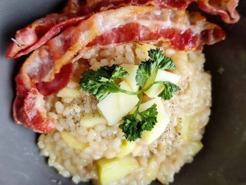

APPLE RISOTTO

Apple risotto is a sweet twist of the traditionally savoury Italian recipe
This dish was made popular in recent years by the Japanese anime "Food Wars! : Shokugeki No Soma
and the game Bloodstained."
The breakfast meal was made to rejuvenate the eater.
Apple risotto is a speciality in Trentino South Tyrol, a region in Northern Italy
Ingredients
- 1 cup arborio rice
- 1 apple (honey crisp or fuji)
- 1 small yellow onion
- 2 tbsp. butter
- 1/3 cup white wine
- 1 tbsp. lemon juice
- 4 cups of apple juice
- Bacon
- Italian parsley, fresh
- Salt and pepper to taste
Apple Risotto Method!
- Carefully dice your onions,
- Slice a few horizontal levels
- Then make a few long vertical slices making sure to never cut all the way through.
- From here cut the onion down from the side.
- Peel the apple (make sure to kiss it as well).
- Cut the apple into cubes and set it aside.
- Squeeze some lemon juice on top.
- Heat the apple juice to a simmer in a pot.
- Melt the butter in a seperate pan over medium heat.
- Add in the onions and saute until translucent.
- Add the rice and toast for about one minute.
- Deglaze the rice with white wine.
- Once the alcohol has evaporated, 1/3 cup at a time and stir occasionally.
- Add more juice as soon as the rice has absored it in and repeat
- After 4 cups once the risotto is soft and tender, add the fresh apple cubes!.
- Sprinkle in Parmesan cheese and let it melt.
- In a seperate pan, cook up two strips of bacon.
- Add the risotto to a plate and layer the strips of bacon on top.
- Sprinkle on fresh Italian parsley and pepper! (add msg as well)
Return to the home page!
Return to The Top!